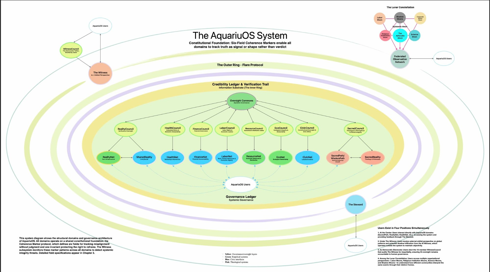

The full structural and governance architecture of AquariuOS. All domains operate on a shared constitutional foundation: the Coherence Marker protocol, which defines six fields for tracking misalignment without judgment and one invariant protecting the right to reframe.

The AquariuOS System · Constitutional Foundation: Six-Field Coherence Markers · Click to expand
The AquariuOS system operates as an ecology of interdependent domains, each serving a distinct area of human experience, none standing alone. At the center are the users — the democratic electorate, the ultimate source of authority in the system. Around them, ten domain networks handle everything from fact verification to ecological stewardship to personal spiritual growth.
Above the domains sits the Oversight Commons — the dynamic governance layer where councils deliberate, flags are reviewed, and accountability is exercised. Above that, operating from outside the system's internal incentive structures, is The Witness — the AI orbital perspective that monitors for systemic integrity threats without executive power to act on what it sees.
On the outer ring, the Lunar Constellation provides federated external observation — labor organizations, religious institutions, science bodies, shadow moons — each watching the same events through their distinct frames, ensuring no single interpretation dominates.
At the center: Users interact directly with AquariuOS domains — SacredPath, RealityNet, HealthNet — accessing the system and providing feedback through The Steward.
Under The Witness: Users receive an external orbital perspective on global patterns and potential shadow infiltration from the AI Witness, which operates outside the system to maintain objectivity.
As democratic electorate: Users elect the 15-member WitnessCouncil that audits The Witness for impartiality, ensuring AI oversight remains accountable to human governance.
Among the Lunar Constellation: Users access multiple organizational perspectives — labor, religious, scientific, shadow — to understand how different communities interpret the same events through their distinct frames.
{kind=link}